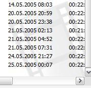
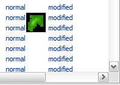
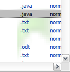
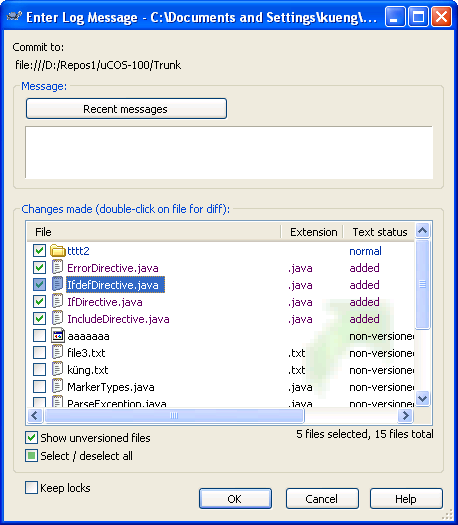

List control background images
$ADSENSE_TOP$While the main focus of TortoiseSVN lies on usability, sometimes I like to add something which doesn't really add a value but just looks nice.
Last week I wanted to implement just that: something that looks nice but doesn't disturb the user. The Windows explorer shows a slightly visible image on the bottom right depending on what files are in the folder it currently shows. The image is barely visible like a watermark. I wanted to show such a watermark image in our main dialogs file list.
The obvious step to get this done would be the SetBkImage method of the CListCtrl class, since that's the control we use to show the file list in our dialogs. So I called that method like this:
HBITMAP hbm = LoadImage(hResource,
MAKEINTRESOURCE(IDB_BACKGROUND),
IMAGE_BITMAP,
128, 128,
LR_DEFAULTCOLOR);
m_ListCtrl.SetBkImage(hbm, FALSE, 100, 100);
But of course, that didn't work at all. No background image
was shown. Stepping through the code of SetBkImage
shows that it's simply a wrapper around the
LVM_SETBKIMAGE
message. Reading the MSDN docs about that message reviled
something that was missing completely from the
documentation of SetBkImage: the parameter hbm of the
LVBKIMAGE
structure is "not currently used". Just great. I then tried
to use another option:
TCHAR szBuffer[MAX_PATH];
VERIFY(::GetModuleFileName(hResource, szBuffer, MAX_PATH));
CString sPath;
sPath.Format(_T("res://%s/#%d/#%d"),
szBuffer, RT_BITMAP,
IDB_BACKGROUND);
m_ListCtrl.SetBkImage(sPath, FALSE, 100, 100);
And that actually worked. But for one, the image was drawn solid with all the transparent pixels of the image drawn black, and the image did not stay at the right bottom when the content of the control was scrolled. I neither could get the image drawn correctly with the alpha channel nor make the image stay at the right bottom, even with setting the image position in the scroll event handler. Obviously, I was on the wrong path here.
Next I tried to draw the image directly in the
NM_CUSTOMDRAW
handler of the list control. That worked really well,
until I scrolled the list of files a little bit faster.
That produced some ugly "leftovers" from the watermark
image. Turns out the list control doesn't always redraw
its background completely when scrolled, which is actually
a good thing for performance, but of course bad for me and
what I want to do.
On a sidenote: the
CDRF_NOTIFYPOSTERASE
isn't used in the list control.
But there must be a way, because Microsoft does it with
the explorer, assuming of course they don't use some
undocumented feature they like to keep to themselves.
Sometimes it is usefull to read the header files from the
SDK. In the file commctrl.h I found the following
defines for use in the
LVBKIMAGE:
#if (_WIN32_WINNT >= 0x0501) #define LVBKIF_FLAG_TILEOFFSET 0x00000100 #define LVBKIF_TYPE_WATERMARK 0x10000000 #define LVBKIF_FLAG_ALPHABLEND 0x20000000 #endif
But of these three defines, only the first one is
documented. Well, not exactly. Searching
MSDN for
LVBKIF_TYPE_WATERMARK revealed
this page.
And here those defines are documented. Heureka! Or so I
thought.
TCHAR szBuffer[MAX_PATH];
VERIFY(::GetModuleFileName(hResource, szBuffer, MAX_PATH));
CString sPath;
sPath.Format(_T("res://%s/#%d/#%d"),
szBuffer, RT_BITMAP,
IDB_BACKGROUND);
LVBKIMAGE lv = {0};
lv.ulFlags = LVBKIF_TYPE_WATERMARK|LVBKIF_FLAG_ALPHABLEND;
lv.pszImage = sPath;
lv.xOffsetPercent = 100;
lv.yOffsetPercent = 100;
m_ListCtrl.SetBkImage(&lv);
Nope, didn't work either. Maybe the bitmap I used didn't
have a real alpha channel? Removing the
LVBKIF_FLAG_ALPHABLEND flag didn't help either.
Out of pure desperation I tried this:
HBITMAP hbm = LoadImage(hResource,
MAKEINTRESOURCE(IDB_BACKGROUND),
IMAGE_BITMAP,
128, 128,
LR_DEFAULTCOLOR);
LVBKIMAGE lv = {0};
lv.ulFlags = LVBKIF_TYPE_WATERMARK;
lv.hbm = hbm;
lv.xOffsetPercent = 100;
lv.yOffsetPercent = 100;
SetBkImage(&lv);
And this worked! Unbelievable. Even though the
documentation tells that the hbm member
of the LVBKIMAGE structure is "not currently used",
it obviously is used (and must be used) if the
LVBKIF_TYPE_WATERMARK flag is set.
The image was shown in the bottom right corner and stayed
there without any UI glitches even when scrolling the file
list. But (there's always a "but") the image was not shown
with its alpha channel. Where it should have been
transparent it was drawn black. But that's what the
LVBKIF_FLAG_ALPHABLEND flag is for:
HBITMAP hbm = LoadImage(hResource,
MAKEINTRESOURCE(IDB_BACKGROUND),
IMAGE_BITMAP,
128, 128,
LR_DEFAULTCOLOR);
LVBKIMAGE lv = {0};
lv.ulFlags = LVBKIF_TYPE_WATERMARK|LVBKIF_FLAG_ALPHABLEND;
lv.hbm = hbm;
lv.xOffsetPercent = 100;
lv.yOffsetPercent = 100;
SetBkImage(&lv);
Or at least that's what I thought. Adding the
LVBKIF_FLAG_ALPHABLEND flag made the bitmap disappear.
I tried different bitmaps, used different image editors
to create a bitmap with alpha channel, but nothing worked.
I even extracted the bitmaps from shell.dll which the
explorer uses for this. Even those did not work!
But giving up so close to reaching the goal? Not me :)
The easy solution would be to simply use a bitmap with a
white background. That looks good on most systems where
the user hasn't changed the default system colors. But
some users actually change them, and some even use red or
other colored backgrounds. On those systems, the background
image would look really ugly. So that's not a real
solution.
What I finally came up with was to draw the image alpha blended into an empty bitmap where the background was set to the system background the user has set.
bool CSVNStatusListCtrl::SetBackgroundImage(UINT nID)
{
SetTextBkColor(CLR_NONE);
COLORREF bkColor = GetBkColor();
// create a bitmap from the icon
HICON hIcon = (HICON)LoadImage(AfxGetResourceHandle(),
MAKEINTRESOURCE(nID), IMAGE_ICON,
128, 128, LR_DEFAULTCOLOR);
if (!hIcon)
return false;
RECT rect = {0};
rect.right = 128;
rect.bottom = 128;
HBITMAP bmp = NULL;
HWND desktop = ::GetDesktopWindow();
if (desktop)
{
HDC screen_dev = ::GetDC(desktop);
if (screen_dev)
{
// Create a compatible DC
HDC dst_hdc = ::CreateCompatibleDC(screen_dev);
if (dst_hdc)
{
// Create a new bitmap of icon size
bmp = ::CreateCompatibleBitmap(screen_dev,
rect.right,
rect.bottom);
if (bmp)
{
// Select it into the compatible DC
HBITMAP old_bmp = (HBITMAP)::SelectObject(dst_hdc, bmp);
// Fill the background of the compatible DC
// with the given colour
::SetBkColor(dst_hdc, bkColor);
::ExtTextOut(dst_hdc, 0, 0, ETO_OPAQUE, &rect,
NULL, 0, NULL);
// Draw the icon into the compatible DC
::DrawIconEx(dst_hdc, 0, 0, hIcon,
rect.right, rect.bottom, 0,
NULL, DI_NORMAL);
::SelectObject(dst_hdc, old_bmp);
}
::DeleteDC(dst_hdc);
}
}
::ReleaseDC(desktop, screen_dev);
}
// Restore settings
DestroyIcon(hIcon);
if (bmp == NULL)
return false;
LVBKIMAGE lv;
lv.ulFlags = LVBKIF_TYPE_WATERMARK;
lv.hbm = bmp;
lv.xOffsetPercent = 100;
lv.yOffsetPercent = 100;
SetBkImage(&lv);
return true;
}
And that's how I got this to work. One problem remained: the watermark image was painted over when an item got selected, and the first column was not transparent and was also painting over the watermark.
As it turned out, this was due to the fact that I set
the LVS_EX_FULLROWSELECT style for the control.
Removing that style finally made the watermark image behave
the exact same way it does in the explorer.
And now (drumroll please): the screenshots of the add and commit dialog:

And in case someone knows how to use the
LVBKIF_FLAG_ALPHABLEND flag, please let me know!